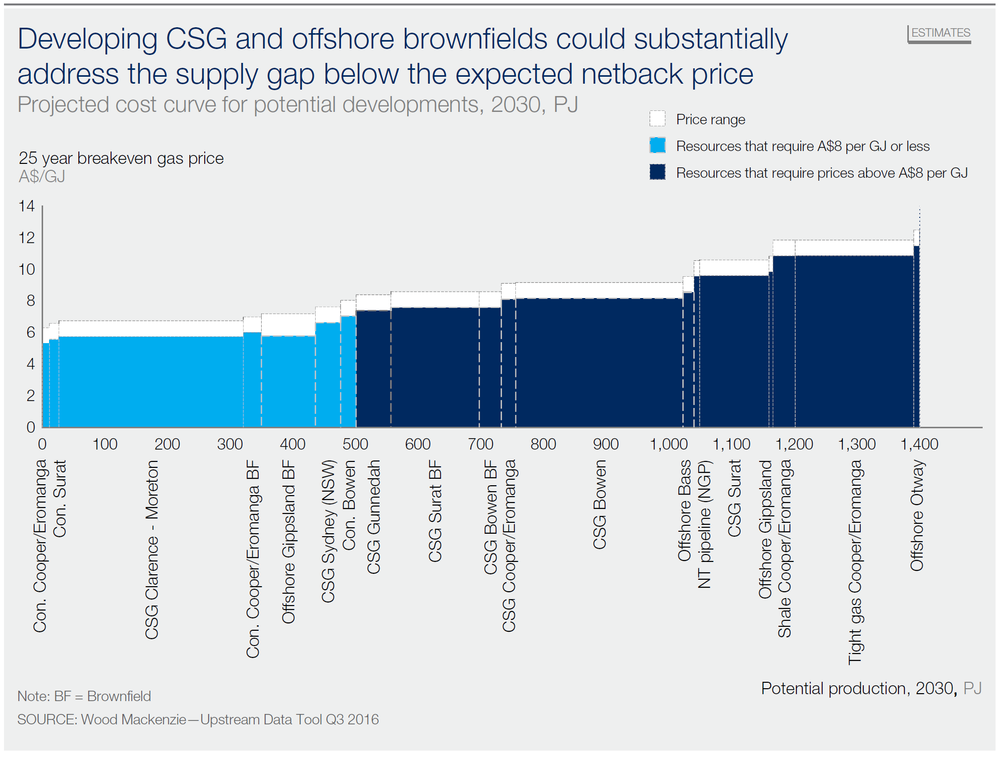

To get cheaper gas we need to develop more gas
Nobody had much heard of the Gas Supply Opportunities Outlook or the (“GSOO”) before, but the version released in March last year changed the government’s approach to gas markets almost overnight. That report warned that in 2018 southern Australia was headed for a 10 to 54 petajoules gas shortage.1
Within a week Australia’s gas industry was called to Canberra to meet with the Prime Minister, and other relevant Ministers, to discuss how to respond. The Prime Minister said immediately after the meeting that:
The Commonwealth Government has enormous power in this area, as you know. We have the ability to control exports. So what we’re seeking from the industry - and they understand the context in which their commitments are being sought - what we’re seeking from them are commitments that ensure that the domestic gas market is well-supplied. That’s fundamental. They understand that. They understand it very well. All of the participants around the table understand it also.2
The next month, the Australian government announced that it would establish laws that would allow the imposition of export controls. Later in the year the gas industry agreed with the government to return gas to the domestic market so controls were not required.
I did not think that I, as a Liberal-National Minister for Resources, would preside over the introduction of a gas export control framework. However, the significance of this decision was commensurate with the size of the problem. We had to act to save jobs, even if such action was against our instincts.
Australia’s gas industry has changed dramatically in the last decade. Before 2010 Australia had never exported more than 20 million tonnes of gas in a year. By 2017, annual exports had more than doubled to 45 million tonnes. By 2020, it is expected that Australia will export almost 80 million tonnes of gas, and overtake Qatar as the world’s largest exporter of gas.

Most of our gas exports are from Western Australia and so have had almost no impact on the domestic availability of gas in eastern Australia. The LNG projects in the west contribute to a domestic gas reservation policy there (set at 15 per cent of exports).
There was some cynicism about whether the government’s agreement with the gas industry would deliver results but the latest version of the GSOO, released last month, dispelled those concerns. According to the report’s authors, the Australian Energy Market Operator, the gas market no longer face shortfalls in the next few years. Partly this is because more supply has come along, including from a new pipeline from the Northern Territory, but the demand for gas is also falling, especially for electricity production.
The results of the government’s efforts are seen most starkly in the price. When the meeting with the Prime Minister was held in early 2017, the price of gas at Wallumbilla, a trading hub in western Queensland, was $10.74 per gigajoule. For the last 3 months the same price has averaged $8 per gigajoule, a 25 per cent reduction.

Back in early 2017, the price of gas in Australia was about the same as it was in North Asia, a paradoxical result given that Asia gets most of its gas from imports. This year, the price of gas in Australia has been around $2 per gigajoule cheaper than in North Asia.


What has changed is where the cheapest gas is in Australia. Four years ago the cheapest gas in Australia was in Melbourne or Adelaide because these markets were closest to Australia’s domestic gas production hubs of the Bass Strait and the Cooper basin. That is no longer the case. Queensland now accounts for the vast majority of eastern Australia’s gas production and that is reflected in cheaper gas prices in Brisbane.
The difference between gas prices in Victoria and Brisbane have moved in favor of Brisbane by $2 per gigajoule since 2014. Before then, Victorian prices were often around $1 per gigajoule cheaper than those in Brisbane. Now the situation is reversed. Given Victoria consumes around 225 petajoules of gas annually, this $2 per gigajoule turnaround, puts the Victorian economy at a $450 million a year disadvantage.
Changes in the gap between Victorian and Asian prices have been even more dramatic. Four years ago, Victorian gas prices were often an astounding $10 per gigajoule lower than prices in North East Asia. More recently, they moved to be around the same price, although since the government’s agreement with the gas industry the Victorian advantage has reemerged albeit by a much reduced amount.

Southern Australian prices have risen in part because Australian gas markets have been connected to the world. However, prices have risen by more in southern Australia than elsewhere because the supply of gas in southern Australia has fallen at the same time that Australia’s exports have increased.
For the past 40 years most of Australia’s gas has come from production offshore of Victoria, in the Bass Strait. These fields, however, are declining in quantity and quality. New gas supplies from the Bass tend to have higher mercury and carbon dioxide content so they are more costly to process. Last year’s GSOO projected that gas production from offshore Victoria would be 100 PJ lower over the next decade than in recent years. While production may end up higher than these projections they represent the risks that Australia’s traditional production sources will be on the decline.

The only area in Australia that could make up this shortfall is the coal seam gas fields of Queensland. The Queensland coal seam gas fields have consistently contributed to the domestic gas market as a whole over the past few years. Indeed, the Queensland coal seam gas industry as a whole has never exported more gas than it produces over a 12 month period.

In the lead up to the 1st meeting the government had with the gas industry, Queensland’s contribution to domestic gas supply had been falling, and it did turn negative for about a month around early 2017. For the more than 1000 days that Queensland’s coal seam gas has been exported, on just 34 days has Queensland’s CSG industry exported more than it has produced.

Over the past 12 months, the Queensland CSG industry has contributed almost 100 PJ to the domestic market in net terms. That is about a fifth of east coast gas demand. Without coal seam gas, the domestic gas market would be in a much worse position.
Coal seam gas’s contribution has offset the reduced productivity of the Bass Strait. However, to paraphase John Laws “oils aint oils”, and “gases aint gases”. Queensland coal seam gas is more costly to produce and there are significant costs to transport CSG to southern Australia.
Coal seam gas production differs greatly from the offshore gas production in the Bass Strait. First, there is no oil derived from CSG so costs have to be recouped through the sales of just gas. Second, those costs are higher because more wells must be drilled. One of the Queensland CSG joint ventures produces the same amount of gas from over 2000 CSG wells that the Darwin LNG project produces from just 12 offshore wells. CSG also differs from the shale gas in the United States, where oil is often produced and directional drilling allows for fewer wells.
Further, future coal seam gas projects have even higher costs than those in production. Wood Mackenzie analysis indicates that most coal seam gas projects would require a price of higher than $8 per gigajoule to come into production. (The CSG projects below $8 per gigajoule, like Clarence-Moreton and Sydney, are not proceeding due to regulatory barriers.)

Moreover, the cost of transporting gas from Queensland to southern Australia is expensive. A recent ACCC report found that the costs of transport from Queensland to Melbourne range from $2 per gigajoule to $3.81 per gigajoule depending on how much flexibility the customer prefers. Transport costs are therefore at least around 25 per cent of the total cost of gas in southern Australia.
The cost of sending gas from Western Queensland to Japan is around $2.50 to $3.00 per gigajoule (including the costs of liquefaction). So Japan may be geographically distant from Queensland but from an economic perspective it is not that far away.
If Victoria does not develop its own natural resources it will end up paying the import price for gas, as is the case in North Asia. That will erode what was once a natural advantage for Victoria.
The basic principle is that gas prices are cheaper close to where gas is produced. That is the clear conclusion when you look at gas prices around the world. Prices tend to be cheaper where gas is produced locally in abundance. The price of gas in the United States is much cheaper than that in other countries that rely on imports for gas consumption.

If we do not want to lose our natural advantage as a producer of cheap energy we must develop our natural energy resources. Victoria’s continuing, non-sensical ban on gas development is threatening thousands of jobs in its manufacturing sector, and consigning millions of Australian families to higher energy bills. The sooner we can see sense, the sooner things will improve.
AEMO 2017, Gas Statement of Opportunities, March, https://bit.ly/2MS88QE↩
Turnbull, M. 2017, Press Conference with the Minister for the Environment and Energy, Minister for Resources and Northern Australia, and the Minister for Industry, Innovation and Science, 15 March, https://bit.ly/2Lk6Cpt↩